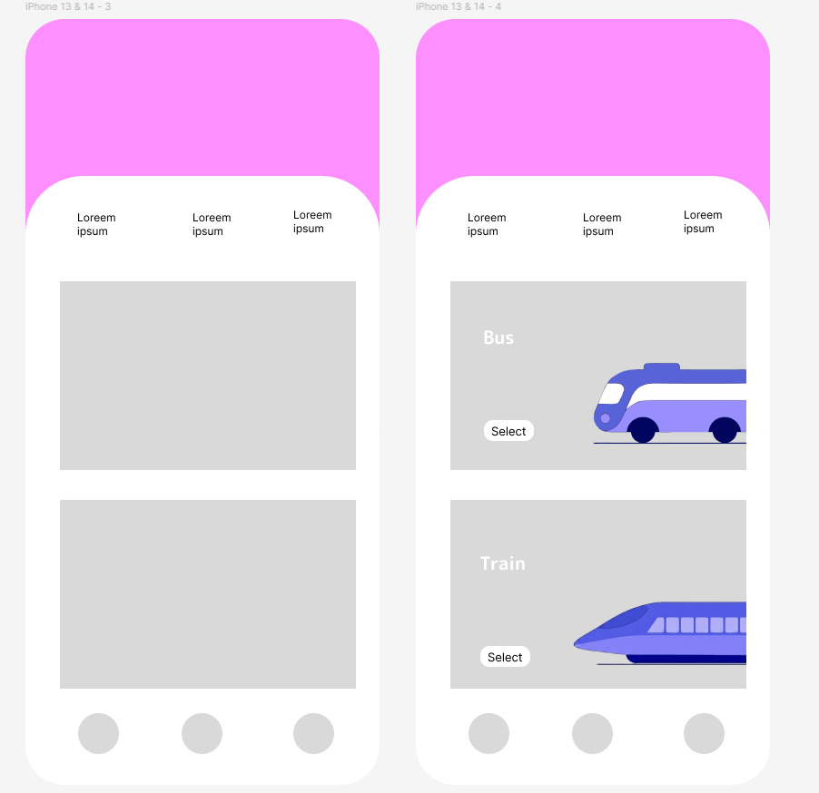

UX/UI · Mobilapp · Figma
Buss & tog
Et mobilkonsept som gjør valget mellom buss og tog visuelt enkelt, med store transportkort og en ryddig navigasjonsstruktur.
Åpne designet i Figma ↗
Om konseptet
En tydelig vei til riktig transportmiddel.
Prototypen utforsker et enkelt mobilgrensesnitt der buss og tog får hver sin tydelige flate. Illustrasjoner, korte etiketter og handlingsknapper gjør hovedvalgene lette å skanne på en liten skjerm.
Designet er holdt bevisst enkelt, slik at innholdshierarki, plassering av navigasjon og størrelsen på interaktive elementer står i sentrum før videre detaljering av tekst og funksjonalitet.
Designgrep
Tydelige valg
Buss og tog presenteres som store, separate alternativer som er enkle å oppfatte raskt.
Mobil hierarki
Store innholdsflater og god avstand mellom elementene gir en ryddig opplevelse på liten skjerm.
Fast navigasjon
Navigasjon nederst på skjermen gir et kjent mønster og holder hovedhandlingene lett tilgjengelige.